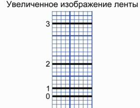
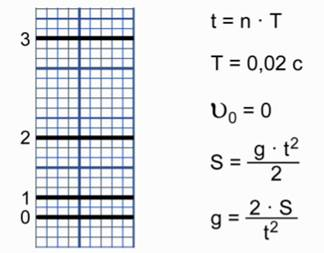

Лабораторная работа посвящена исследованию ускорения свободного падения. На двух предыдущих уроках мы говорили о движении тела, которое называется свободным падением, и движении тела, брошенного вертикально вверх. Вооружившись этими знаниями, давайте проведем экспериментальное исследование ускорения свободного падения. Чтобы провести эту лабораторную работу, рекомендуется собрать установку для снятия показаний движения падающего тела и уже по ним произвести расчеты. Мы решили провести лабораторную работу по уже полученным данным и по ним рассчитать ускорение свободного падения.
Рис. 1. Изображение ленты
В оборудование входит лента с миллиметровыми делениями, на которой стоят отметки падающего свободно тела.
По отметкам на этой ленте мы должны определить время движения тела. Второе, что мы должны сделать, – это определить пройденное телом расстояние. Зная, что движение у нас равноускоренное, с нулевой начальной скоростью, мы используем уравнение для вычисления ускорения свободного падения.
Рис. 2. Расчет ускорения свободного падения
Обратите внимание на уравнение, написанное первым: t = n . T. Т – это промежуток времени, через который ставится отметка о падении тел. n – это порядок (количество) этих промежутков. В нашем случае Т = 0,02 с. Время это достаточно небольшое, поэтому для его измерения требуется специальное оборудование.
Начальная скорость у падающего тела \( V_0=0 \). Расстояние, которое проходит тело, определяется уравнением: \( S = \frac{g \cdot t^2}{2} \). Из этого уравнения следует формула для вычисления ускорения свободного падения: \( g= \frac{2 \cdot S}{t^2} \)
Рассмотрев ленту и определив отсчеты, где стоят засечки положения пройденного тела, внесем данные в таблицу.
| № | Время движения \( t = n \cdot T\) , с | Путь S, мм | Путь S, м | Ускорение свободного падения \( g = \frac{2 \cdot S}{t^2} \), м.с \( ^2 \) |
|---|---|---|---|---|
| 1 | n = 1 t = 0,02 c |
2 | 0,002 | \( g = \frac{2 \cdot 0,002}{0,02^2} = 10 \) |
| 2 | n = 2 t = 0,04 с |
8 | 0,008 | \( g = \frac{2 \cdot 0,008}{0,04^2} = 10 \) |
| 3 | n = 3 t = 0,06 c |
18 | 0,018 | \( g = \frac{2 \cdot 0,018}{0,06^2} = 10 \) |
В первом случае засечка, которая показывает положение тела от нулевого значения, составляет по времени t = 0,02 с.
Расстояние, которое прошло при этом тело, составляет 2 мм (в метрах пройденный путь – 0,002 м), теперь, подставляя эти выражения в формулу \( g = \frac{2 \cdot S}{t^2} \), получаем, что ускорение свободного падения равно 10 м/с \( ^2 \). Аналогично рассмотрим второй и третий случаи. Значения ускорения свободного падения для них записаны в таблицу.
Теперь давайте обсудим вопрос погрешности измерения ускорения свободного падения. Для этого необходимо из значения, полученного нами, вычесть истинное значение (9,81 м/с \( ^2 \) ) и разделить на истинное значение ускорения свободного падения, причем результат выразить в процентах.
$$ \Delta g = \frac{g-g_0}{g_0} $$
$$ \Delta g = \frac{10-9,8}{9,8} = 0,0204 $$
Если переводить в проценты, то получается, что \( \Delta g > 2 \% \). Такое отклонение вполне допустимо.
Вывод из лабораторной работы мы предлагаем вам сделать самостоятельно, обязательно отметив, какие причины обуславливают наличие погрешностей.